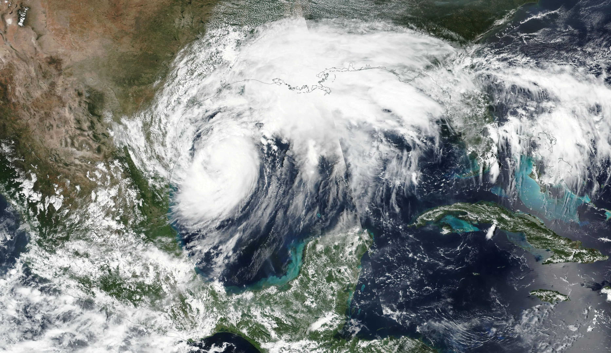

| Desastres naturales y dónde ocurren con mayor frecuencia | |
| Terremoto | El Cinturón de Fuego del Pacífico | Huracán | Caribe |
| Inundación | Bangladés |
| Erupcion volcanica | Indonesia |
| Incendio forestal | California |
| Tsunami | Japón |

El huracán Francine llega a Luisiana
11 de septiembre de 2024
El huracán Francine tocó tierra en Luisiana siendo un huracán de categoría 2 y avanza hacia Nueva Orleans . Cuando llegó al centro de Mississippi se convirtió en una depresión tropical, comenzando a provocar grandes inundaciones y cortes de luz masivos por donde pasaba.